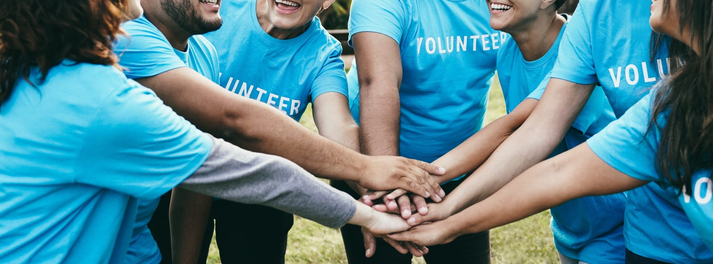
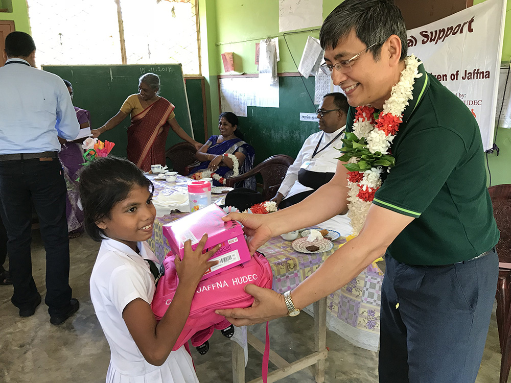

THINGS TO DO IN EDUCATION
Quality education is more than just attending classes. It involves different activities that improve learning experiences and personal growth. Explore these activities to make the best of your educational journey[6]
Quick Navigations
Academic Activities
Engage in activities that go beyond traditional education and promote learning opportunities for all.
Free Online Learning Platforms
Learn with the free platforms like Coursera, edX and udemy to improve your skills and education without the financial .
- Benefit from recognized courses: Many platforms offer courses that are recognized by employers, allowing you to showcase your skills and learn new things
- Learn at your own pace: Online learning platforms offer flexible schedules, allowing you to learn any time as you wish at home.
- Access a variety of subjects:You can learn anything like professional skills, learn a new language, or gain knowledge in cutting-edge topics like data science and artificial intelligence.
Why Should You Use Online Learning Platforms?
- Accessibility:Online platforms make education accessible to individuals worldwide.
- Diverse Learning Styles: There are many platforms offer various learning formats like video lectures, quizzes and books provide different learning styles.
- Affordable Education:Online courses are often more affordable than other learning options, also this allowing for better education without price tag.
Volunteer for Educational Programs
Provide tutoring or mentorship to children, adults, or individuals to become success in their life.
- Volunteer with Schools or Community Centers:Many organizations are looking for volunteers to work in after schools tutoring programs or literacy workshops.
- Mentorship for Growth: Offering mentorship can help others through difficult academic subjects and inspire them to follow their educational and career goals.
Examples of Educational Volunteer Programs:
- Local School Tutoring Programs:Many schools do after-school programs where you can teach to students in any subjects like maths, reading and science.
- Mentorship Programs: Offer one-on-one tutoring and mentorship to children who are from low-income families.
Benefits of Volunteering:
- Gain Teaching Experience:Volunteering can be a great way to build your teaching and leadership experience.
- Develop New Skills:Volunteering can help you develop critical skills like communication, problem-solving, and time management, which are valuable in any career.
Extracurricular Activities
Get involved in extracurricular activities that complement formal education and foster community development.
Organize Fundraisers for Education

Fundraising events play a key role in supporting educational initiatives. Whether it,s for scholarships, school supplies, or providing access to learning materials, organizing fundraisers can make a significant impact. These activities help raise awareness about the importance of education.
How you Can Help:
- Partner with local organizations to create fundraising events.
- Inspire your network to donate items like books, uniforms, or learning materials.
Support Local Education Initiatives
Supporting local education initiatives is an excellent way to contribute to your community. Volunteering at local schools or community centers can help provide resources, guidance, and support to students who need it most. Your time and expertise can make a significant difference in shaping the future of young learners.
Learn More Education InitiativesHow you Can Help:
- Volunteer to teach or tutor students after school hours.
- Partner with local community organizations to run educational workshops for students.
- Help organize educational events, such as book drives, to support schools and libraries in your area.
Community Engagments
Connect with the wider community through these activities that promote social responsibility and practical learning.
Donate School Supplies

Donate school supplies, such as books, stationery, and uniforms, to underfunded schools to help improve the learning experience for students.
Community Impacts:
- School supply donations can make a significant difference in the education of needful children, helping them attend school with the unoforms.
- By donating, you are contributing to closing the education gap and ensuring that all students have equal access to learning resources.
Support for Education:
- Donating school supplies to students in need provides them with a fair chance to succeed academically.
- Donations can be made through local schools, community centers, or charity organizations, which directly benefit students.
Promote Digital Literacy
Help others by teaching digital literacy, enabling them to access online learning platforms, educational tools, and improve their tech skills.
Skills for Success:
- By teaching digital literacy, you are preparing individuals for the workforce by equipping them with the skills needed to use computers, the internet, and essential software tools.
- You empower others to access online learning platforms, thereby enhancing their education and future career prospects.
Benefits of Promoting Diigital Literacy:
- Increased Access to Opportunities:Digital literacy opens doors to educational resources, job applications, and professional development opportunities.
- Empowerment Through Education:Teaching digital skills helps individuals access the information they need to make informed decisions about their education and careers.
- Bridge the Digital Divide:Promoting digital literacy ensures that no one is left behind as technology becomes increasingly important in all aspects of life.